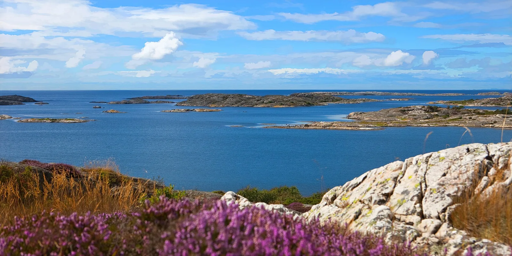

Parc national de Kosterhavet
Strömstad, Bohuslän, Suède · kayak, snorkeling, plongée

Premier parc national marin de Suède, créé en 2009 autour des îles Koster, face à la frontière norvégienne. Criques de granit, îlots et eaux riches se découvrent en kayak ou masque sur le nez depuis Sydkoster.
- Lieu
- Strömstad, Bohuslän, Suède
- Niveau
- Intermédiaire
- Activités
- kayak, snorkeling, plongée
- Type d'eau
- Mer / océan
- Coordonnées
- 58.89, 11.03 (position approximative du secteur)
Dangers à connaître
- Ferries et bateaux dans le détroit entre les deux îles Koster.
- Vent et clapot qui se lèvent vite sur les passages exposés.
- Eau fraîche même en été.
Le conseil d'Ocean Buddy
Pars de Långegärde, sur Sydkoster, et longe les côtes abritées ; renseigne-toi au naturum sur les zones protégées pour les oiseaux et les phoques.
Ouvrir dans Ocean Buddy Télécharger sur l'App Store
Source : Fiche Ocean Buddy · septembre 2026 · à vérifier localement.